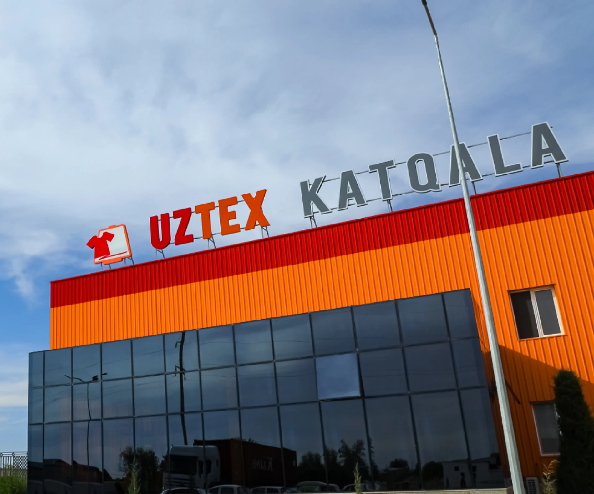
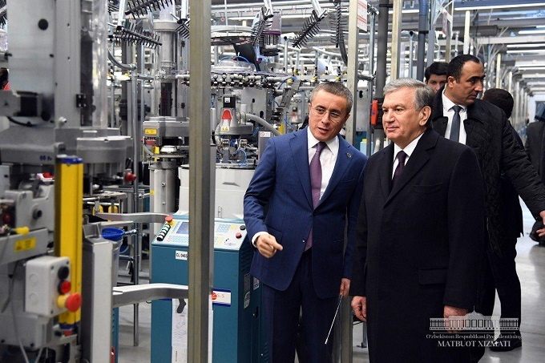

(Uztex Katqala) — Xorazm viloyatining Shovot tumanida joylashgan yirik toʻqimachilik korxonasi boʻlib, u mashhur UZTEX GROUP xoldingi tarkibiga kiradi. Ushbu fabrika haqida asosiy ma’lumotlar: Faoliyat yoʻnalishi: Asosan paypoq va paypoq mahsulotlari (chuilochno-nosochnie izdeliya) ishlab chiqarishga ixtisoslashgan. Shuningdek, trikotaj kiyimlar ham tayyorlanadi. Manzil: Xorazm viloyati, Shovot tumani, Gulzor koʻchasi, 15-uy. Aloqa: +998 62 345 16 16. Eksport: Mahsulotlar nafaqat Oʻzbekiston ichki bozori, balki MDH mamlakatlari va Yevropaga ham eksport qilinadi. Prezident Shavkat Mirziyoyev ikki yil muqaddam Uztex kompaniyalar guruhiga Shovot tumanida yuqori texnologik imkoniyatlarga ega mazkur korxonani tashkil etish va mahalliy aholini ish bilan ta’minlash yuzasidan topshiriqlar bergan edi. O‘tgan davrda ilgari mavjud bo‘lgan korxona negizida ilg‘or texnologiyalar bilan jihozlangan, mingdan ortiq ish o‘rniga ega «Katqal'a teks» korxonasi ishga tushirildi. Bu haqda prezident matbuot xizmati xabar berdi. Loyiha qiymati 65 million dollar bo‘lgan korxona faoliyati ikki bosqichda tashkil etildi. 2017 yilda amalga oshirilgan dastlabki bosqichda Italiyaning «Lonati» kompaniyasida ishlab chiqarilgan 528 ta, joriy yilda yana 512 ta paypoq to‘qish dastgohi xarid qilindi. Bugungi kunda korxonada turli o‘lchamdagi ayollar, erkaklar va bolalar paypoqlari ishlab chiqarilmoqda. Yiliga 70 million juft, qiymati 30 million dollarlik paypoq tayyorlash quvvatiga ega qo‘shma korxonada ishlab chiqarish jarayoni to‘liq innovatsion texnologiyalar asosida boshqariladi. O‘tgan yili korxonada 5,7 milliard so‘mlik mahsulot ishlab chiqarilib, ichki bozorga yo‘naltirildi. Joriy yildan to‘la quvvat bilan ishlay boshlagan korxonada oktyabr oyi holatiga ko‘ra 12,5 million juft paypoq to‘qildi. 3,85 million dollarlik mahsulot AQSH, Rossiya, Moldova, Ukraina kabi qator mamlakatlarga eksport qilindi.